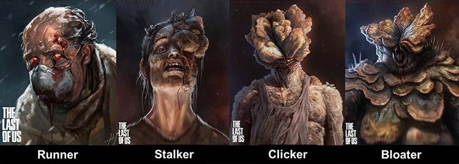

História do jogo
A franquia The Last of Us tem uma história incrível, imersiva e emocionante, sendo uma das mais fantásticas dos games.
Cidades abandonadas retomadas pela natureza. Uma população dizimada por uma praga moderna. Os sobreviventes matam uns aos outros por comida, armas e qualquer outra coisa em que puderem botar as mãos. Na história de The Last of Us, Joel, um sobrevivente brutal, e Ellie, uma adolescente corajosa e madura apesar da pouca idade, devem unir forças para saírem vivos da sua jornada pelos Estados Unidos.
The Last of Us Part II acontece cinco anos depois da jornada perigosa pelos Estados Unidos pós-pandêmicos. Ellie e Joel se estabelecem em Jackson, Wyoming. A vida em uma próspera comunidade de sobreviventes lhes trouxe paz e estabilidade, apesar da ameaça constante dos infectados e de outros sobreviventes mais desesperados.
Quando um evento violento interrompe essa paz, Ellie embarca em uma jornada implacável para fazer justiça e encontrar uma solução. Enquanto vai atrás de cada um dos responsáveis, como Abby, ela se confronta com as repercussões físicas e emocionais devastadoras de suas ações.
Personagens
Joel
Originalmente do Texas, Joel foi pai solteiro entre os seus 25 e 30 anos quando ocorreu o surto inicial do Cordyceps. Fugindo com o seu irmão Tommy e com sua filha de doze anos, Sarah, eles se envolveram em um tiroteio com um soldado, e Sarah foi mortalmente ferida e morreu em seus braços, deixando-o traumatizado. Nos 20 anos seguintes, Joel fez o que tinha que fazer para sobreviver. No tempo passado em um mundo pós-apocalíptico brutal, ainda amargurado com a morte de sua filha, Joel se tornou um sobrevivente endurecido, física e mentalmente. Ele tem um estilo de luta brutal e é capaz de enfrentar e derrotar homens muito mais jovens em combate corpo a corpo.
Tess
Uma endurecida sobrevivente, ela era a "parceira" de longo prazo de Joel. A dupla ganhava a vida como contrabandistas; eles trocaram com sobreviventes fora da cidade. Ela tinha uma filosofia de "cachorro-come-cachorro", semelhante a Joel e Ellie.Ellie
Ellie nasceu em algum momento de 2018-2019, com pai e mãe falecidos. Foi estudante de uma Escola Militar de Boston. Cresceu praticamente em uma zona de quarentena, o que é um dos motivos pelo qual não sabe nada.Além disso Ellie é a única pessoa imune ao fungo cordyceps.
Tommy
Ele é o irmão mais novo de Joel, tio paterno de Sarah, marido de Maria e ex-membro de Vagalumes.Apocalipse
Infecção
A infecção começa por conta do cordyceps, um fungo da classe dos ascomicetos, que cresce principalmente em insetos e artrópodes. É uma variação deste tipo fungo que vai infectar os humanos no game, gerando mutações bizarras que irão devastar quase toda a população da Terra.A base de maior foco do fungo no mundo é localizada nas florestas tropicais úmidas no continente asiático, onde existem mais de 400 espécies de cordyceps conhecidas. Após atingir o sistema nervoso central, a criatura infectada busca lugares que tenham uma boa ventilação e umidade, para fazer com que o fungo se desenvolva com mais facilidade.
Infectados
 Infectados são humanos que foram infectados e posteriormente mutados em horríveis novas formas pela Infecção do cérebro de Cordyceps. As criaturas resultantes são altamente agressivas e atacam qualquer humano não infectado à vista.Estágios de infecção
Corredores
Os corredores são o primeiro e mais fraco estágio dos infectados que recentemente entraram em sua transformação. As pessoas que foram infectadas entrarão nesse estágio dentro de 1-2 dias, com aumento da irritabilidade e hostidade em relação aos outros, sendo um sintoma chave.Perseguidores
Os perseguidores são o segundo estágio da infecção. Eles têm a visão e a velocidade dos corredores, com a ferocidade dos Estaladores. Os traços físicos mais notáveis que definem os Perseguidores são os distintos ruídos que eles fazem, o início dos crescimentos dos fundos na cabeça e no rosto com apenas um olho sobrando, o desenvolvimento de pseudo-ecolocalização e sua discrição ao avistar uma vítima à distância.Estaladores
Os estaladores são o terceiro estágio dos infectados e demoram aproximadamente um ano para atingir esse estágio de infecção. Eles tiveram exposição prolongada ao fungo e agora possuem uma força que supera significativamente a média humana. Isso os torna mais mortais, mas ao preço de serem completamente cegos devido à infecção por fungos que toma conta de seu rosto. No entanto, os Estaladores são capazes de manobrar por áreas utilizando a ecolocalização, que produz ruídos visível de clique/guinchar para localizar fontes de som, daí o nome. Como os corredores, os Estaladores ás vezes podem ser encontrados em um estado passivo.Bloaters
Os bloaters são o quarto, mais raro e mais perigoso estágio de infecção, pois levam mais tempo para se desenvolver, levando anos para chegar a esse estágio. Eles são cobertos por fungos espessos que atuam efetivamente como armaduras. Por causa dessa cobertura protetora, eles podem suportar vários ataques de armas como a espingarda e o rifle de caça e até machados e facões, tornando-os extremamente difíceis de eliminar.